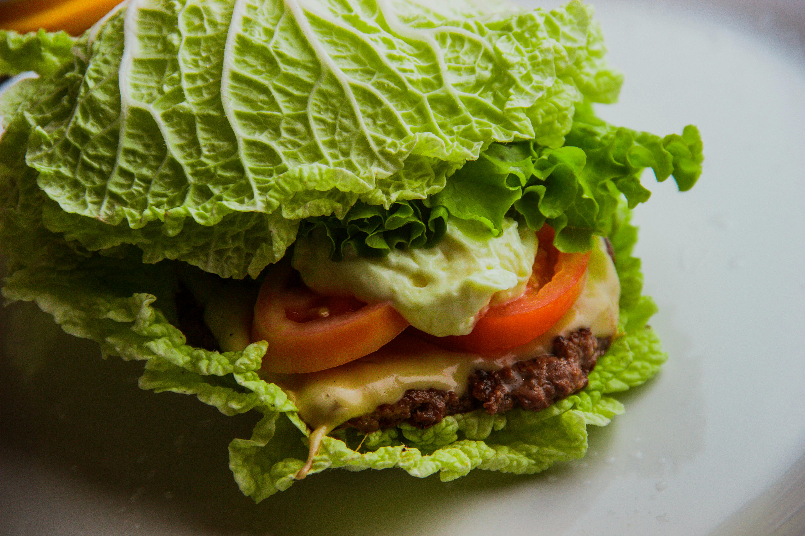

Bunless Burger with Avocado

Juicy bunless burger wrapped in fresh lettuce with creamy
avocado.
American Keto/Paleo recipe
Ingredients
- 1 lb ground beef (80/20 blend)
- 4-6 large butter lettuce leaves
- 1 large tomato, sliced
- 1/2 red onion, sliced
- 1 ripe avocado, sliced
- Salt and pepper to taste
- Optional: garlic powder, onion powder
Instructions
-
Season ground beef with salt, pepper, and optional spices. Form into
4 patties.
- Preheat grill or grill pan to medium-high heat.
-
Grill beef patties for 4-5 minutes per side, or until desired
doneness.
-
While patties cook, wash and dry lettuce leaves, slice tomato,
onion, and avocado.
- Place each cooked patty on large lettuce leaves.
- Top with tomato slices, onion, and avocado.
- Wrap in lettuce leaves and serve immediately.